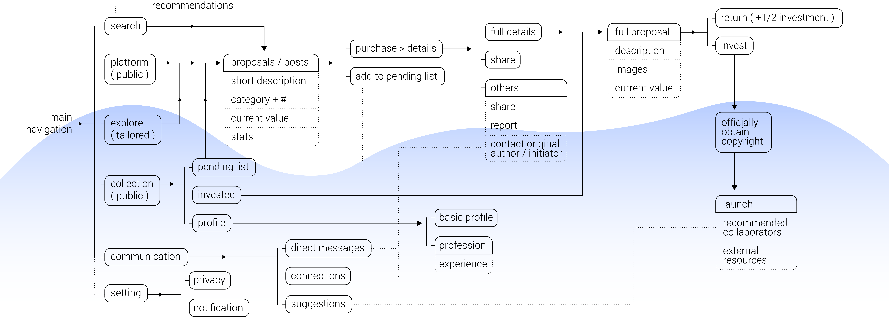
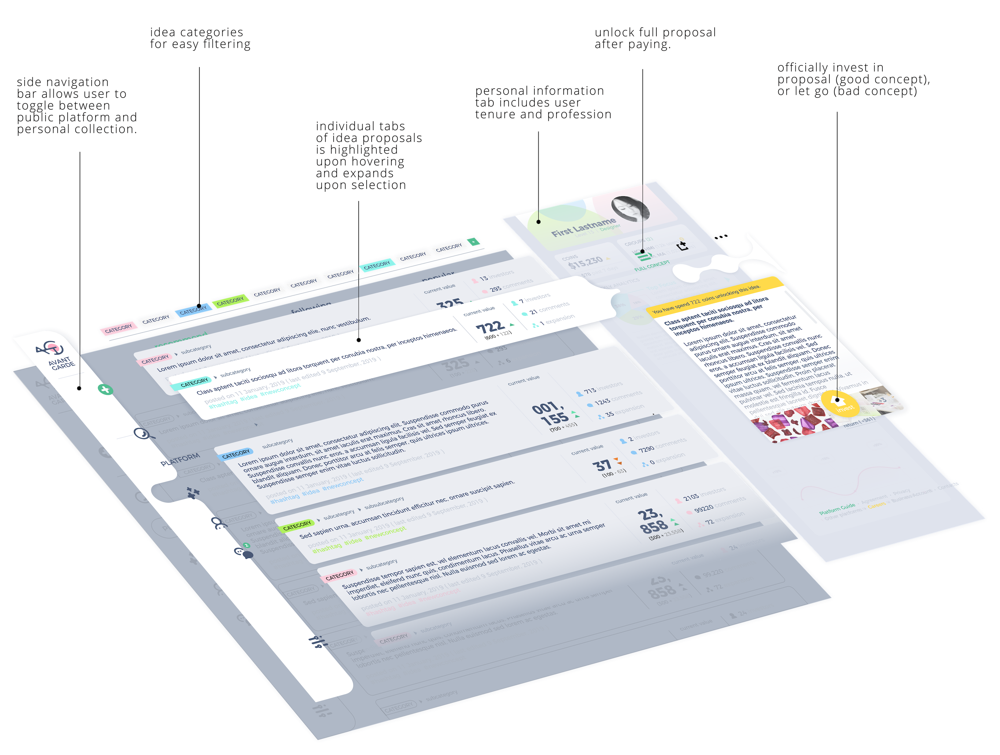

Avant Garde is a cross-platform application that allows people to document their random inspirations and ideas, and "auction" them to others who find the idea meaningful to them.
USER, SUBJECT & MARKET RESEARCH
The internet is an endless ocean of inspiration for anyone learning or applying creative skills. However, when it comes to making ideas a reality it has always been hard. Ideas are sometimes more valuable than implementation, but in our modern society, there aren't many platforms that encourages and values ideas and concepts. Majority of the world's knowledge and resource sharing platform has always been one-sided, where money buys finished / half-finished products, and the creator never gets feedback on where their creations have gone.
Based on text-mining result and cirrus generated using the Voyant Tool, current Q&A and knowledge seeking platforms such as Medium and Quora focuses on a diverse range of topics, and there is especially a demand for best, creative works. However, most of these platforms simply offer personal responses to the answer seeker's questions as a temporary solution, rather than proceeding deeper into the context and potential turn these questions to real inventions.
NEEDS DEFINITION SURVEY
As part of defining the problem space, a named survey were sent out to students and young professionals within my network. I also had in depth conversation with a few of them that stood out as representative potential users as well as strong deviations based on the survey results.
Survey population: art and design (23) v.s. engineering and sciences (17) v.s. others such as marketing / humanities (21)
KEY STATISTICS THAT STOOD OUT
100% of art-professions and 81% other-professions consider themselves “creative”, while only 35% of engineering-professions do.
91% of art professions, 65% of engineering professions and 52% of other professions like to explore new spaces for work-related or personal projects.
The primary go-to website for inspirations (of all kinds) for art professions is according to user response is dribble, and stack-overflow for engineers.
91% of art-professions and 95% engineers rely (somewhat heavily) on cross-disciplinary collaboration in work-related or personal projects, while only 24% of other-professions do.
very low percentage of their idea that becomes reality (it was a vague question), respectively 5%, 2%, and 14% for the three groups.
100% of art-professions value concept over implementation, while only 18% of engineers and 33% of others believe so.
key insights from post-survey conversations
a good amount of people brought up the idea of shower thoughts (r/Showerthoughts came up surprisingly often) and believes that its human nature of constantly ideate, though it may not always lead somewhere
ideas are very important, but it is hard to give it a “value” because it is not “real / tangible / show potential for immediate revenue”it’s hard sharing ideas, because once its out there its value immediately decrease as it may no longer be original
people come up with similar ideas all the time, and it is almost always a joy meeting someone who came up with the same wild idea (and it seems to be the driving factor behind pushing the idea forward)
PROJECT GOALS
For people in the creative fields, inspirations are for sure important. But with so many resources just a Google search away, finding a place that one can reliably turn to whenever you need a healthy dose of inspiration can be daunting. We always say one man's trash is another man's treasure and there are no bad ideas, but can we find a more efficient way to obtain what's right for an individual, and differentiate between and great, decent, and "meh" in the overwhelming pool?, most of these platforms simply offer personal responses to the answer seeker's questions as a temporary solution, rather than proceeding deeper into the context and potential turn these questions to real inventions.
Inspire Brainstorming
Research the arts and creatives have long fell behind that of the sciences because they focus more on the concept than the result. Through this platform, people will begin to become more comfortable with sharing in the subject.
Value of Thoughts
There are no “bad ideas” or “bad questions”, but each holds a different value to each person in different scenarios. What if we can assign a currency system to them, and map the idea to our priorities.
Foster Collaboration
A good idea is always iterated multiple times upon, the collaborative nature of the interface design allows users to constantly improve the idea till it matures.
Concept to Reality
Ideas often have difficulties been actually implemented, whether if it is trouble shooting or finding a real audience, with the purpose of engaging users from multiple disciplines, more ideas can become real-world solutions.
Avant Garde aims to be one of its kind, focusing sharing creative knowledge and assigning the value they deserve.
PERSONA & TARGET
Chrissy
Chrissy is a HCI-phD student with an interest in design. Other than her research and thesis, she is looking for new ways to apply her skills. She doesn’t want to be limited in academia, and wish to get more involved in what the public's interest.
Frequent visitor of:
Quora + Medium
Frequent attender of:
academic conference
Ben
Ben is an artist / designer. He has many ideas but doesn’t have the programming or engineering experience to achieve them. He believes that ideas are as valuable as implementation, and is always looking for collaborators on projects.
Frequent visitor of:
Craigslist + Facebook
Frequent attender of:
hobbyist meetings
This platform is meant for the general public, but focuses on filling the need of younger users in the creative and arts fields.
The common characteristics between the users of this platform is lack of time to do everything. Many of these users specialize in interactions, design and concepts, making it hard for them to find time to learn how to fully implement or build their imaginations. For those who have experience in both, often doesn't go too deep in either field, or have greater interest in interdisciplinary research, making it hard to them to know where the true pain-points in these fields are. These people also often worry that their works or ideas are stolen / not properly credited. This can also be a good place for them to be properly reworded, even if its a virtual currency.
WORKFLOW & KEY FEATURES
The general workflow of this follows the logical path of stock and investment with separate screens for private and public platforms. It is a one-way road down the pipeline, but the user has the ability to return / withdraw at any point in time.
The wireframe layout of the app follows a standard desktop / web app with a left-side navigation bar and divided content (main / profile on the right). Notifications and confirmation appear in the form of light-box pop ups / full screens.
INTERFACE LAYOUT
The design of this application utilizes many elements of modern design as an attempt to increase usability, yet it incorporates a unified aesthetic that isn't too dry, creating a recreational, creative environment intended for users in the arts and humanities. The main platform for this application is on the desktop / web, while mobile versions are available.
The navigation on the left of the interface has the option of creating a new post, search, and direct to public platform, explore, personal collection and messaging. The public platform follows a simple streamline of 3 stages: browse, invest and ship that reflects the stages of turning inspiration into reality.
Browse / Explore / Recommend: The Platform acts like a hybrid Q&A and discussion forum type where the user can find all ideas made public. Users can view a short description of the idea, where it is up to the author how much they want to disclose, and decide if they’re interested in investing in the idea. Browse displays all the ideas in the poll that the user can sort based on date, value, etc. Explore shows a range of popular / featured ideas while Recommend / Following are tailored based on the user's posts and investments.
Invest: The cost of investing in the idea is based on the “value” of the idea. Like how stocks work, if a user chooses to invest in an idea, the value increases and the user becomes a "shareholder" to the idea, and will be given the total amount the idea holds if it is brought-off by another user. If a user, after reading the full description of the idea, decides that it is not worth its value (or simply a "scam") they can choose to withdraw, and receive 1/2 of their investment back while the value of the idea also decreases.
interaction mockup
The idea then gets put in your personal collection. The Collection tab provides the user a full-view of their profile. They are able to find the invested ideas and concepts in their collection, allowing them to overlook the development of these ideas until they decide to "buy" the copyright of the idea, and make it a reality.

Making it a reality: The last step in the process is about making the idea a reality. The user can buy-off their invested idea at any point if they are interested in the sole copyright of the idea, and turning it into reality via a product team / startup / etc. The platform will reward all invested users with the value of the investment, lock the idea, and recommend users in the field that may be of assist in making this happen. This way, the collaborative nature of the platform is taken advantage of, and increases the chance that the idea gets implemented / deployed.
The mobile part of this project is also under development, and the visual style works cohesively with the desktop / cloud interface.